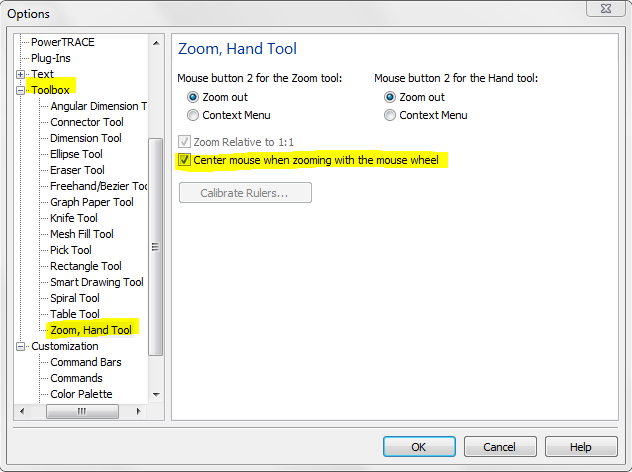

В X4 это было гениально!
Solowejka / 19.03.2011, 02:47/00:41
Форум:
Весьма удобное совмещение масштабирования и панорамирования позволяло забыть об инструменте Рука.
Для просмотра какого-либо места, достаточно подвести к нему курсор и крутнуть колёсико мыши. Выбранное место оказывалось не только в центре экрана, а в центре свободной для просмотра зоне, не прикрытой окнами настройки.
Даже когда не требовалось масштабирование, всё равно было быстро и удобно сменить область просмотра, наставив в нужное место курсор и крутнув колёсико мыши туда–обратно.
Считаю, это было гениальной находкой разработчиков.
Жаль, что от этого в Х5 версии ушли. Или где-то настраивается?

divingdog, СПАСИБО!!!
Solowejka, поиск на первой строчке выдаёт это
П.С. Вот так вот и выясняется, кто читал обзор, а кто нет.